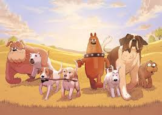
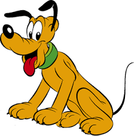

This list of fictional dogs is subsidiary to the list of fictional animals. It is restricted to notable dog characters from the world of fiction. For real/famous dogs, see List of dogs. For mythological dogs, see Mythological dogs.
Prose and poetry

fictional dog 2
Main article:
List of fictional dogs in prose and poetry
Buck, in Jack London's The Call of the Wild
Bull's-eye, Bill Sikes' dog in Oliver Twist by Charles Dickens
Ripper, Marjorie Dursley's pet dog in J.K Rowling's Harry Potter and the Prisoner of Azkaban
Jip (short for Gypsy), Dora Spenlow's spaniel in Charles Dickens' David Copperfield
Baleia, the dog-companion that follows a poor family throughout the hardships of the 1915-drought in Brazil in Vidas secas, by Graciliano Ramos
Quincas Borba, the dog whose name is the same as his human's in Machado de Assis' Quincas Borba
Tentação, the dog in the homonymous short-story by Clarice Lispector
Pingo de Ouro, Miguilim's companion in the novella Campo Geral, by João Guimarães Rosa
Biruta, the dog in the homonymous short-story by Lygia Fagundes Telles
Bruno Lichtenstein, the dog in the homonymous short-story by Rubem Braga
Toto, Dorothy's dog in The Wizard of Oz, by L. Frank Baum
Sharik, the astray dog who undergoes a transformation surgery in Heart of a Dog, by Mikhail Bulgakov
Mr. Bones, the companion dog in Timbuktu, by Paul Auster
Randolph, a Labrador retriever and the narrator of A Dog About Town, by JF Englert
Song

fictional dog 3
Only songs with dog characters are included in this section. Not metaphorical dogs or songs with "dog" in the title.
Apollo, from various Coheed & Cambria songs, whose name appears in the titles of their third and fourth albums
Arrow, from Harry Nilsson's single "Me and My Arrow", also featured in The Point!
"Atomic Dog" by George Clinton
Bingo, from the spelling song of the same name. It's worth noting that the lyrics do not make it clear whether Bingo is the name of the dog or the farmer.
"Black Shuck", song by The Darkness about the spectral black dog, Black Shuck
Blue, from the song of the same name by Peter, Paul and Mary
Boo, from "Me and You and a Dog Named Boo", 1971 song by Lobo (aka Roland Kent Lavoie)
"Bow Wow Wow Wow (Wild Dog on the Prowl)" sung by Mitch Ryder with Was (Not Was)
Carlos, "A little chihuahua ... that had some kind of skin disease and was totally blind" in the song "Frank's Wild Years" by Tom Waits.
Catalessi, "Torna Catalessi" by Caparezza
"Death of a Martian", Red Hot Chili Peppers song about the death of Flea's dog Martian, from the 2006 album Stadium Arcadium.
"Evelyn, A Modified Dog", from the eponymous song on Frank Zappa's One Size Fits All (1975).
"Feed Jake", song about a dog named Jake by Pirates of the Mississippi
Fido, talking dog from the Frank Zappa song "Stinkfoot" from his album Over-Nite Sensation (1973).
Frank, in "Classified" by C. W. McCall
Sporting and advertising mascots
fictional dog 4
Axelrod, in advertisements for Flying A Service Stations
Big Mo for Alpo dog food
Boo, The Citadel, named after Lt. Col. Thomas Nugent Courvoisie, known by most as "The Boo". In 2013 they introduced Boo X
Brutus, mascot for the Canterbury Bankstown Bulldogs
Bullseye, bull terrier mascot of Target Corporation
Colin Curly, bulldog mascot for Quavers. Voice by Lenny Henry
Cobi, Catalan sheepdog as the mascot for the 1992 Summer Olympics
Dinky, chihuahua for Taco Bell fast food restaurant
Dubs, mascot of the Washington Huskies
Duke, in advertisements for Bush Baked Beans
General The Citadel introduced 2003, in 2013 introduced General II aka G2
Farfel the Dog, in advertisements for Nestle Quick chocolate
Handsome Dan, mascot of the Yale Bulldogs
Jack the Bulldog, mascot of the Georgetown Hoyas
Jason, in advertisements for Hush Puppies
Johnathan, mascot of the UConn Huskies
Lady Greyhound, mascot of the Greyhound Lines Bus Company
McGruff the Crime Dog, for the National Crime Prevention Council